Linux: 企业级堡垒机 JumpServer
- TAGS: Linux
Jumpserver
Jumpserver 历史版本
2.19
创建数据库
- 进入mysql容器（kubectl exec -it -n jump mysql-0 bash）
- 进入控制台（mysql -uroot -p39fdlksajrhi）
- 创建数据库（CREATE DATABASE jump DEFAULT CHARACTER SET utf8mb4 COLLATE utf8mb4_unicode_ci; ）
访问
- 域名：ops-jumpserver.xxx.com
- 用户名/密码：admin/eyu&3k0oQlG2PDsx
登陆方式：
ssh username@ops-jumpserver-ssh.xxx.com -p 2222
Host jump HostName jumpserver-ssh.xxx.com User username Port 2222 IdentityFile ~/.ssh/id_rsa
用户初始化脚本(ubuntu)
运维新加用户时，需要在跳板机上执行以下脚本，将用户名替换为下面的user1 user2等
`PASSWORD=l05A1KqgZX50g2342skld for USER in jasper.xu fei.da do useradd -m -G root -s /bin/bash $USER echo "$USER:$PASSWORD" |chpasswd usermod -G sudo $USER echo "${USER} ALL=(ALL) NOPASSWD:ALL" >> /etc/sudoers done` cat << \EOF >>/etc/sudoers jasper.xu ALL=(ALL) NOPASSWD: ALL fei.da ALL=(ALL) NOPASSWD: ALL EOF sed -i -r 's@(PasswordAuthentication) no@\1 yes@g' /etc/ssh/sshd_config systemctl restart sshd
系统用户说明
- self: 个人用户，会以每个人的身份登陆，都有sudo权限
- ubuntu: ubuntu默认用户
- ec2-user: al2默认用户
- db: db组使用，待建
- rd: 研发使用，待建
2.6版本
安装完成后配置文件在 /opt/jumpserver/config/config.txt
自动安装
数据目录： /opt/jumpserver
curl -sSL https://github.com/jumpserver/jumpserver/releases/download/v2.6.1/quick_start.sh | sh
手动部署
外置环境要求MySQL >= 5.7 Redis >= 5.0.0
下载文件
cd /apps/work/service/ yum -y install wget wget https://github.com/jumpserver/installer/releases/download/v2.6.1/jumpserver-installer-v2.6.1.tar.gz tar -xf jumpserver-installer-v2.6.1.tar.gz cd jumpserver-installer-v2.6.1 export DOCKER_IMAGE_PREFIX=docker.mirrors.ustc.edu.cn cat config-example.txt
安装
./jmsctl.sh install
注意：使用外置数据库就按提示修改 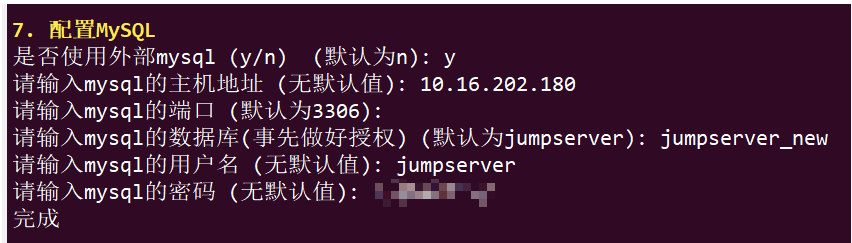
维护
可以使用如下命令启动, 然后访问
./jmsctl.sh start
其它一些管理命令
./jmsctl.sh stop ./jmsctl.sh restart ./jmsctl.sh backup ./jmsctl.sh upgrade 更多还有一些命令，你可以 ./jmsctl.sh --help来了解
- 访问 Web 后台页面 http://10.16.202.178:8888 https://10.16.202.178:8443
ssh/sftp 访问
ssh admin@10.16.202.178 -p2223 sftp -P2223 admin@10.16.202.178
添加资产
添加管理用户
可以使用root或者有sudo权限的用户做为管理用户。这里用的root，上传的私钥。
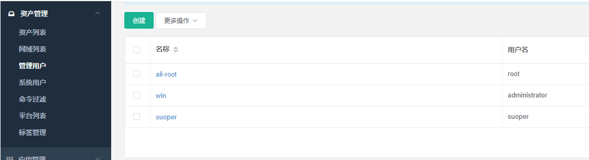 添加资产 绑定管理用户来管理机器
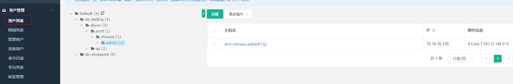 添加系统用户
登录到机器里以哪个用户身份显示，如果用户在机器上已经存在，可不勾选自 动推送。如果不存在则勾选，并按决定是否给予sudo权限。
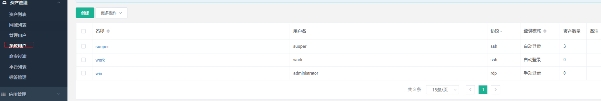 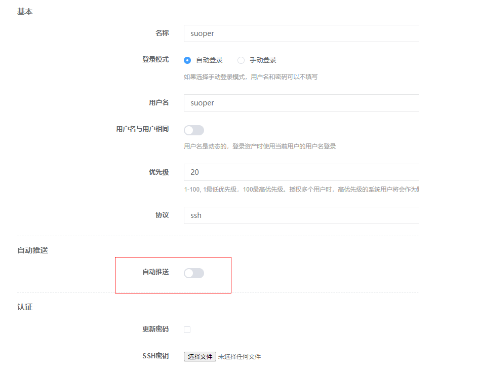 权限管理-添加授权
对资产进行授权，哪些jumpserver用户能登录资产，登录进机器显示什么系统用户
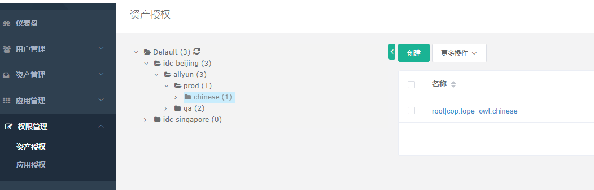 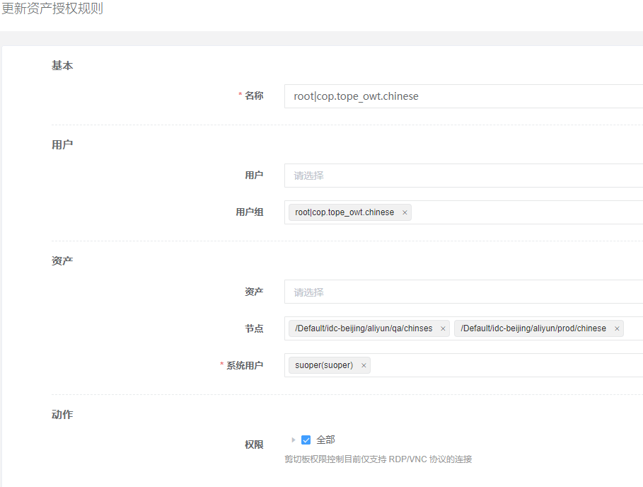 查看作业中心-权限推送情况
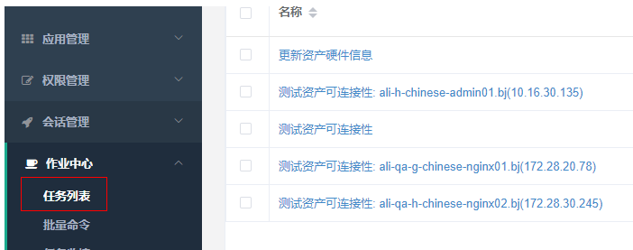
添加k8s
应用管理-创建k8s名称
添加系统用户
注意协议选择k8s，认证令牌填写集群token信息
kubectl --kubeconfig=config_qa describe secrets admin-token-pkpmk -n kube-system
权限管理-应用管理
创建k8s权限规则

添加数据库
应用管理–数据库
系统用户-mysql协议
配置权限
审计功能
- 历史会话
- 命令记录
日志审计
登录日志、FTP日志、操作日志 、改密码日志、批量日志
如历史会话中可以回放用户操作记录
会话管理–历史会话中点击回放
统一认证ldap 与多因素认证

备份与恢复
# 备份 ./jmsctl.sh backup_db # 恢复 ./jmsctl.sh restore_db [sqlfile]
注意：
如果config.txt你修改了 COMPOSE_PROJECT_NAME=jms_new 字段，那么备份脚本也要修改。
# grep -r jms_new * config-example.txt:COMPOSE_PROJECT_NAME=jms_new scripts/5_db_backup.sh: docker run --rm -i --network=jms_new_net jumpserver/mysql:5 ${backup_cmd} | gzip > ${DB_FILE_ZIP} scripts/utils.sh: docker run -it --rm --network=jms_new_net \ scripts/6_db_restore.sh: gunzip <${DB_FILE} | docker run --rm -i --network=jms_new_net jumpserver/mysql:5 ${restore_cmd} scripts/6_db_restore.sh: docker run --rm -i --network=jms_new_net jumpserver/mysql:5 $restore_cmd <"${DB_FILE}"
问题：访问502
问题小结：
#现象 访问报错是后端服务有问题，502啥的，或者一串英文联系管理员，实际是数据库的问题，连接数超了，有人再用，后面的一直在等待 show variables like '%conn%'; #解决 扩大数据库连接数
2.5版本
git clone https://github.com/jumpserver/Dockerfile.git
cd Dockerfile
cp config_example.conf .env
cat .env
docker-compose up
访问 浏览器访问: http://sg-relay.xxx.cn/
SSH 访问: ssh -p 2222 sg-relay.xxx.cn
XShell 等工具请添加 connection 连接, 默认 ssh 端口2222
默认管理员账户 admin 密码 admin
从 v2.6 开始，JumpServer 统一了 社区版 和 企业版 的安装部署包，统一由 installer 项目来维护，dockerfile不再维护。
1.5.2版本
准备
jumpserver都部署在ldap001上。
登录方式：LDAP登录 管理员：admin 密码：xxxxx
| 机房 | 主机 | 公网ip | 公网端口 |
|---|---|---|---|
| 团华东1 | 192.168.110.224 | - | 80,2222 |
| 团华东2 | 192.168.201.208 | - | 80,2222 |
| 团华北2 | 192.168.101.106 | - | 80,2222 |
| 社华东1 | 10.0.2.216 | - | 80,2222 |
| 社华东2 | 192.168.20.161 | - | 80,2222 |
| 社华北2 | 192.168.10.94 | - | 80,2222 |
| 金融华北2 | 172.16.0.8 | - | 80,2222 |
| 西二旗 | 172.18.11.168 | - | 80,2222 |
- 各组件信息
Jumpserver 默认端口为 8080/tcp 配置文件 jumpserver/config.yml koko 默认 SSH 端口为 2232/tcp, 默认 Web Terminal 端口为 5001/tcp 配置文件在 koko/config.yml Guacamole 默认端口为 8081/tcp, 配置文件 /config/tomcat9/conf/server.xml Nginx 默认端口为 81/tcp Redis 默认端口为 6379/tcp Mysql 默认端口为 3306/tcp
Protocol Server name Port TCP Jumpserver 8080 TCP koko 2231, 5001…. TCP Guacamole 8082…. TCP Db 3306 TCP Redis 6379 TCP Nginx 81 说明： 数据库信息由DBA提供。 redis使用yum本地安装。 koko,Guacamole使用docker 部署 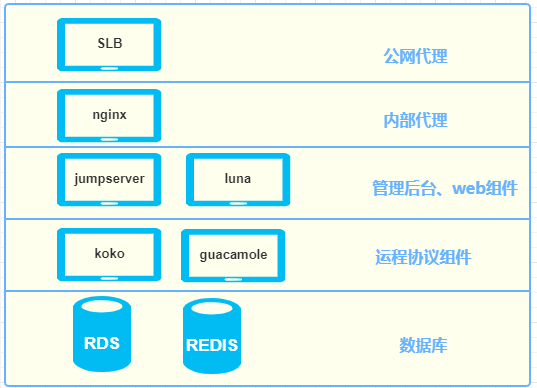
部署脚本与监控脚本
- 系统初始化
社华北2 rsync -r sa@124.127.109.95::yz_hb2/init/init.sh /tmp 社华东2 rsync -r sa@124.127.109.95::yz_hd2/init/init.sh /tmp 社华东1 rsync -r sa@124.127.109.95::yz_hd1/init/init.sh /tmp 团华北2 rsync -r sa@124.127.109.95::xy_hb2/init/init.sh /tmp 团华东2 rsync -r sa@124.127.109.95::xy_hd2/init/init.sh /tmp 团华东1 rsync -r sa@124.127.109.95::xy_hd1/init/init.sh /tmp 西 rsync -r sa@124.127.109.95::hlg/init/init.sh /tmp 金融华北2 rsync -r sa@124.127.109.95::qs_hb2/init/init.sh /tmp cd /tmp && sh init.sh 密码：wowonetwork - 部署步骤
1 拉取安装文件
rsync -r sa@124.127.109.95::wanlin/jumpserver /tmp 密码：wowonetwork
2 部署单本版jumpserver 在ldap001上进行部署
bash /tmp/jumpserver/init.sh --help 社华北2 bash /tmp/jumpserver/init.sh schb2 社华东2 bash /tmp/jumpserver/init.sh schd2 社华东1 bash /tmp/jumpserver/init.sh schd1 团华北2 bash /tmp/jumpserver/init.sh tchb2 团华东2 bash /tmp/jumpserver/init.sh tchd2 团华东1 bash /tmp/jumpserver/init.sh tchd1 西 bash /tmp/jumpserver/init.sh xrq 金融华北2 bash /tmp/jumpserver/init.sh scmhb2 本地 bash /tmp/jumpserver/init.sh local
选错机房了，只需改config.yml中
DB_HOST值。3 修改admin管理员密码 各机房admin统一密码：xxxx
source /data/py3/bin/activate cd /data/jumpserver/apps python manage.py changepassword admin
4 服务监控
mkdir /data/work/open-falcon/script/ cat >>/data/work/open-falcon/script/report_agent.sh <<\EOF #!/bin/bash timestamp=`date +%s` host_name=`hostname` ### jumpserver jumpserver_num=0 [ `curl -o /dev/null -s -w %{http_code} http://127.0.0.1:8080/` == "302" ] && jumpserver_num=1 || jumpserver_num=0 if netstat -ntlp |grep 1988 |grep falcon &>/dev/null; then curl -X POST -d '[{"metric": "jumpserverl.daemon_status", "endpoint": "'$host_name'", "timestamp": '$timestamp', "step": 60,"value": '$consul_num',"counterType": "GAUGE","tags": ""}]' http://127.0.0.1:1988/v1/push fi EOF crontab -e */1 * * * * bash /data/work/open-falcon/script/report_agent.shopen-falcon中添加监控指标。
5 阿里SLB信息(加白名单) 后端ldap001，健康检查端口80,2222
机房 地址 tcp监听端口 团华东1 47.x.xx.xx 18888,2222 团华东2 101.x.xx.xx 18888,2222 团华北2 47.x.xx.xx 18888,2222 社华东1 47.x.xx.xx 18888,2222 社华东2 47.x.xx.xx 18888,2222 社华北2 60.x.xx.xx 18888,2222 金融华北2 39.x.xx.xx 18888,2222 西 172.x.xx.1xx 18888,2222 提供运维开发SLB地址，管理员账号密码。
DAT 18888 – 81 2222 – 2222
6 配置JMPS-ldap
JMPS管理页面–>系统设置–>LDAP设置
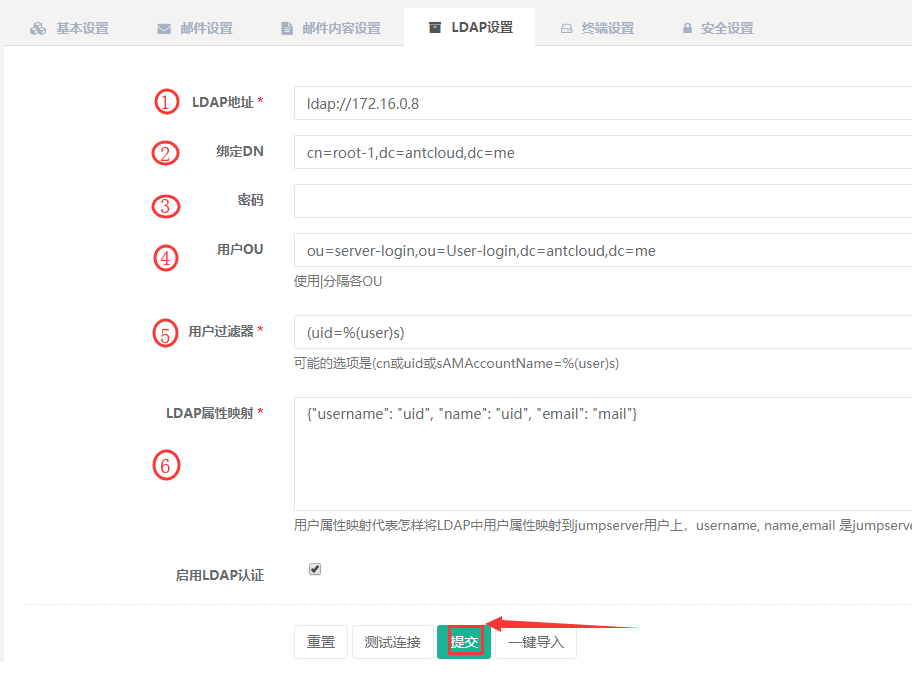 过滤器统一：(uid=%(user)s)
映射统一：{"username": "uid", "name": "uid", "email": "mail"}
机房 地址 DN OU 密码 团华东1 ldap://192.168.110.224 cn=root-1,dc=antcloud,dc=me ou=server-login,ou=User-login,dc=antcloud,dc=me TetEh6dv1jyw 团华东2 ldap://192.168.201.208 cn=root-106,dc=zonghengke,dc=yunzong ou=server-login,ou=User-login,dc=zonghengke,dc=yunzong TetEh6dv1jyw 团华北2 ldap://192.168.101.106 cn=root-106,dc=zonghengke,dc=yunzong ou=server-login,ou=User-login,dc=zonghengke,dc=yunzong TetEh6dv1jyw 社华东1 ldap://10.0.2.216 cn=root-1,dc=antcloud,dc=me ou=server-login,ou=User-login,dc=antcloud,dc=me TetEh6dv1jyw 社华东2 ldap://192.168.20.161 cn=root-1,dc=antcloud,dc=me ou=server-login,ou=User-login,dc=antcloud,dc=me TetEh6dv1jyw 社华北2 ldap://192.168.10.94 cn=root-1,dc=antcloud,dc=me ou=server-login,ou=User-login,dc=antcloud,dc=me TetEh6dv1jyw 金融华北2 ldap://172.16.0.8 cn=root-1,dc=antcloud,dc=me ou=server-login,ou=User-login,dc=antcloud,dc=me TetEh6dv1jyw 西 ldap://172.18.51.235 cn=root-1,dc=yunzong ou=server-login,ou=User-login,dc=yunzong TetEh6dv1jyw 7 创建管理用户oap
资产管理–>管理用户
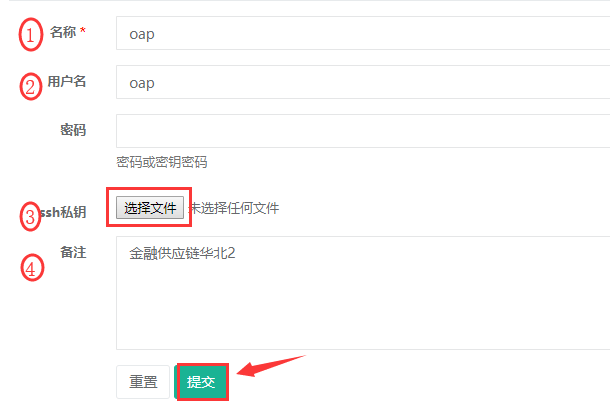 用户管理–>用户组 删除default用户组。
8 导入资产0. 修改对ECS中的主机标签 加入前缀： xrq 西 tc-hb2 团华北2 tc-hd2 团华东2 tc-hd1 团华东1 sc-hb2 社华北2 sc-hd2 社华东2 sc-hd1 社华东1 scm-hb2 金融华北2
如 金融供应链华北2机房
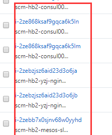 - JMS中下载资产模板
- SW中梳理信息整理到模板中
上线资产模板
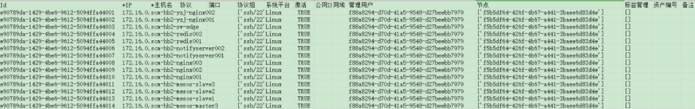
- 维护
修改密码
tr -dc '0-9a-zA-Z' </dev/urandom |head -c 20 source /data/py3/bin/activate cd /data/jumpserver/apps python manage.py changepassword <user_name>
(py3) [root@xu-3 apps]# python manage.py changepassword admin Changing password for user 'Administrator(admin)' Password: Password (again): Password changed successfully for user 'Administrator(admin)'
清理celery产生的数据
(无法正常推送及连接资产, 一直显示……..等可以使用, 请确定字符集是
zh_CN.UTF-8)source /data/py3/bin/activate cd /data/jumpserver/apps celery -A ops purge -f
更新升级
cd /data/jumpserver/ systemctl stop jms git checkout master git pull git checkout 1.5.2 git pull origin 1.5.2 pip install -r requirements/requirements.txt git branch -vv systemctl restart jms
- 脚本内容
[root@rsync-server jumpserver]# tree /data/wanlin/jumpserver/ /data/wanlin/jumpserver/ ├── init.sh ├── jms.service ├── jumpserver.conf ├── jumpserver.tar.gz ├── luna.tar.gz ├── nginx.conf └── tcp.conf
[root@rsync-server jumpserver]# cat init.sh #!/usr/bin/env bash # declare -A idc idc['schb2']='hb2-yunzong-dns-dbm-local.mysql.rds.cici.com' idc['schd2']='hd2-zhk-sw-dbm-local.mysql.rds.cici.com' idc['schd1']='hd1-zhk-dns-dbm-local.mysql.rds.cici.com' idc['tchb2']='hb2-swedge-dbm-local.mysql.rds.cici.com' idc['tchd2']='hd2-swedge-dbm-local.mysql.rds.cici.com' idc['tchd1']='hd1-dns-dbm.mysql.rds.cici.com' idc['xrq']='172.18.50.161' idc['scmhb2']='hb2-qs-dns-dbm-local.mysql.rds.cici.com' idc['local']='127.0.0.1' argus() { cat <<EOF 机房： idc['schb2'] idc['schd2'] idc['schd1'] idc['tchb2'] idc['tchd2'] idc['tchd1'] idc['xrq'] idc['scmhb2'] idc['local'] EOF } fist_arg=$1 [ $# -eq 0 -o "$fist_arg" == "--help" ] && argus && echo -e "\033[1;31m必须有机房参数,如bash init.sh schb2\033[0m" && exit 1 DB_PASSWORD="XSURt3v2rZhoe4ISZ7jd2Zah" DB_HOST=${idc["$fist_arg"]} [ -z "$DB_HOST" ] && echo -e "DB_HOST空 \033[1;31mbash init.sh --help\033[0m" && exit 1 [ ! -d "/data" ] && mkdir /data echo "$1 地址：$DB_HOST" dependency_install() { echo -e "\033[31m 部署环境 \033[0m" \ && wget -O /etc/yum.repos.d/CentOS-Base.repo http://mirrors.aliyun.com/repo/Centos-7.repo \ && wget -O /etc/yum.repos.d/epel.repo http://mirrors.aliyun.com/repo/epel-7.repo \ && yum -y install wget gcc git \ && yum install -y yum-utils device-mapper-persistent-data lvm2 \ && yum-config-manager --add-repo http://mirrors.aliyun.com/docker-ce/linux/centos/docker-ce.repo \ && yum makecache fast \ && rpm --import https://mirrors.aliyun.com/docker-ce/linux/centos/gpg \ && echo -e "[nginx-stable]\nname=nginx stable repo\nbaseurl=http://nginx.org/packages/centos/\$releasever/\$basearch/\ngpgcheck=1\nenabled=1\ngpgkey=https://nginx.org/keys/nginx_signing.key" > /etc/yum.repos.d/nginx.repo \ && rpm --import https://nginx.org/keys/nginx_signing.key \ && yum -y install redis mariadb mariadb-devel nginx container-selinux docker-ce \ && if [ "$fist_arg" == "local" ]; then yum -y install mariadb-server MariaDB-shared;systemctl enable mariadb; systemctl start mariadb; fi \ && systemctl enable redis nginx docker \ && systemctl start redis \ && yum -y install python36 python36-devel \ && python3.6 -m venv /data/py3 result=`echo $?`; [ $result -ne 0 ] && echo -e "\033[1;31m部署环境失败\033[0m" && exit 1 } jumpserver_install() { echo -e "\033[31m 下载组件 \033[0m" \ && cd /data \ && if [ ! -d "/data/jumpserver" ]; then tar xf /tmp/jumpserver/jumpserver.tar.gz -C /data/ ; chown -R root:root jumpserver; fi \ && if [ ! -f "/data/luna.tar.gz" ]; then tar xf /tmp/jumpserver/luna.tar.gz -C /data/ ; chown -R root:root luna; fi \ && yum -y install $(cat /data/jumpserver/requirements/rpm_requirements.txt) \ && echo -e "[easy_install]\nindex_url = https://mirrors.aliyun.com/pypi/simple/" > ~/.pydistutils.cfg \ && source /data/py3/bin/activate \ && pip install --upgrade pip setuptools -i https://mirrors.aliyun.com/pypi/simple/ \ && pip install -r /data/jumpserver/requirements/requirements.txt -i https://mirrors.aliyun.com/pypi/simple/ \ && curl -sSL https://get.daocloud.io/daotools/set_mirror.sh | sh -s http://f1361db2.m.daocloud.io \ && systemctl restart docker \ && docker pull jumpserver/jms_koko:1.5.2 \ && docker pull jumpserver/jms_guacamole:1.5.2 \ && rm -rf /etc/nginx/conf.d/default.conf \ && cp /tmp/jumpserver/jumpserver.conf /etc/nginx/conf.d/jumpserver.conf \ && \cp /tmp/jumpserver/nginx.conf /etc/nginx/nginx.conf \ && \cp /tmp/jumpserver/tcp.conf /etc/nginx/tcp.conf \ && \cp /tmp/jumpserver/jms.service /usr/lib/systemd/system/jms.service \ && chmod 755 /usr/lib/systemd/system/jms.service; systemctl enable jms result=`echo $?`; [ $result -ne 0 ] && echo -e "\033[1;31m下载组件失败\033[0m" && exit 1 } jumpserver_config() { echo -e "\033[31m 处理配置文件 \033[0m" \ && source ~/.bashrc \ && if [ "$DB_PASSWORD" = "" ]; then DB_PASSWORD=`cat /dev/urandom | tr -dc A-Za-z0-9 | head -c 24`; fi \ && if [ "$SECRET_KEY" = "" ]; then SECRET_KEY=`cat /dev/urandom | tr -dc A-Za-z0-9 | head -c 50`; echo "SECRET_KEY=$SECRET_KEY" >> ~/.bashrc; fi \ && if [ "$BOOTSTRAP_TOKEN" = "" ]; then BOOTSTRAP_TOKEN=`cat /dev/urandom | tr -dc A-Za-z0-9 | head -c 16`; echo "BOOTSTRAP_TOKEN=$BOOTSTRAP_TOKEN" >> ~/.bashrc; fi \ && if [ "$Server_IP" = "" ]; then Server_IP=`ip addr | grep inet | egrep -v '(127.0.0.1|inet6|docker)' | awk '{print $2}' | tr -d "addr:" | head -n 1 | cut -d / -f1`; fi \ && if [ ! -d "/var/lib/mysql/jumpserver" -a "$fist_arg" == "local" ]; then mysql -uroot -e "create database jumpserver default charset 'utf8';grant all on jumpserver.* to 'jumpserver'@'127.0.0.1' identified by '$DB_PASSWORD';flush privileges;"; fi \ && if [ ! -f "/data/jumpserver/config.yml" ]; then \cp /data/jumpserver/config_example.yml /data/jumpserver/config.yml; sed -i "s/SECRET_KEY:/SECRET_KEY: $SECRET_KEY/g" /data/jumpserver/config.yml; sed -i "s/BOOTSTRAP_TOKEN:/BOOTSTRAP_TOKEN: $BOOTSTRAP_TOKEN/g" /data/jumpserver/config.yml; sed -i "s/# DEBUG: true/DEBUG: false/g" /data/jumpserver/config.yml; sed -i "s/# LOG_LEVEL: DEBUG/LOG_LEVEL: ERROR/g" /data/jumpserver/config.yml; sed -i "s/# SESSION_EXPIRE_AT_BROWSER_CLOSE: false/SESSION_EXPIRE_AT_BROWSER_CLOSE: true/g" /data/jumpserver/config.yml; sed -i "s/DB_PASSWORD: /DB_PASSWORD: $DB_PASSWORD/g" /data/jumpserver/config.yml; sed -i "s/DB_HOST: 127.0.0.1/DB_HOST: $DB_HOST/g" /data/jumpserver/config.yml; fi result=`echo $?`; [ $result -ne 0 ] && echo -e "\033[1;31m处理配置文件失败\033[0m" && exit 1 } test_token() { # cat .bashrc SECRET_KEY=P1lMzFbMtmgYzQzZrcvsQQq0ovyjVLKlR6iYkmfz59coiasd2v BOOTSTRAP_TOKEN=3IceRV3aYAHHxSkm } service_start() { echo -e "\033[31m 启动 Jumpserver \033[0m" \ && systemctl start nginx \ && systemctl start jms \ && docker run --name jms_koko -d -p 2231:2222 -p 127.0.0.1:5001:5000 -e CORE_HOST=http://$Server_IP:8080 -e BOOTSTRAP_TOKEN=$BOOTSTRAP_TOKEN --restart=always jumpserver/jms_koko:1.5.2 \ && docker run --name jms_guacamole -d -p 127.0.0.1:8081:8081 -e JUMPSERVER_SERVER=http://$Server_IP:8080 -e BOOTSTRAP_TOKEN=$BOOTSTRAP_TOKEN --restart=always jumpserver/jms_guacamole:1.5.2 \ && echo -e "\033[31m 你的数据库密码是 $DB_PASSWORD \033[0m" \ && echo -e "\033[31m 你的SECRET_KEY是 $SECRET_KEY \033[0m" \ && echo -e "\033[31m 你的BOOTSTRAP_TOKEN是 $BOOTSTRAP_TOKEN \033[0m" \ && echo -e "\033[31m 你的服务器IP是 $Server_IP \033[0m" \ && echo -e "\033[31m 请在安全组里面放行81和2222端口 \033[0m" \ && echo -e "\033[31m 请打开浏览器访问公网80端口 用户名:admin 密码:admin \033[0m" result=`echo $?`; [ $result -ne 0 ] && echo -e "\033[1;31m启动失败\033[0m" && exit 1 } main() { dependency_install jumpserver_install jumpserver_config service_start } main
[root@rsync-server jumpserver]# cat nginx.conf user nginx; worker_processes auto; error_log /var/log/nginx/error.log warn; pid /var/run/nginx.pid; events { worker_connections 8192; use epoll; } http { include /etc/nginx/mime.types; default_type application/octet-stream; charset utf-8; log_format main '$remote_addr - $remote_user [$time_local] "$request" ' '$status $body_bytes_sent "$http_referer" ' '"$http_user_agent" "$http_x_forwarded_for"'; access_log /var/log/nginx/access.log main; server_tokens off; sendfile on; #tcp_nopush on; keepalive_timeout 65; client_max_body_size 10M; client_header_buffer_size 16k; server_names_hash_bucket_size 128; map_hash_max_size 2048; map_hash_bucket_size 128; fastcgi_intercept_errors on; gzip on; gzip_min_length 1k; gzip_buffers 4 16k; gzip_http_version 1.0; gzip_comp_level 2; gzip_types text/plain application/javascript application/x-javascript text/css application/xml application/json text/xml; gzip_vary on; include /etc/nginx/conf.d/*.conf; } include /etc/nginx/tcp.conf;[root@rsync-server jumpserver]# cat jumpserver.conf upstream jumpserver { server localhost:8080; # 这里是 jumpserver 的后端ip } upstream kokows { server localhost:5001 weight=1; # 多节点 # 这里是 koko ws 的后端ip ip_hash; } upstream guacamole { server localhost:8081 weight=1; # 这里是 guacamole 的后端ip ip_hash; } server { listen 81; client_max_body_size 100m; # 录像及文件上传大小限制 location /luna/ { try_files $uri / /index.html; alias /data/luna/; } location /media/ { add_header Content-Encoding gzip; root /data/jumpserver/data/; } location /static/ { root /data/jumpserver/data/; } location /socket.io/ { proxy_pass http://kokows/socket.io/; proxy_buffering off; proxy_http_version 1.1; proxy_set_header Upgrade $http_upgrade; proxy_set_header Connection "upgrade"; proxy_set_header X-Real-IP $remote_addr; proxy_set_header Host $host; proxy_set_header X-Forwarded-For $proxy_add_x_forwarded_for; access_log off; } location /coco/ { proxy_pass http://kokows/coco/; proxy_set_header X-Real-IP $remote_addr; proxy_set_header Host $host; proxy_set_header X-Forwarded-For $proxy_add_x_forwarded_for; access_log off; } location /guacamole/ { proxy_pass http://guacamole/; proxy_buffering off; proxy_http_version 1.1; proxy_set_header Upgrade $http_upgrade; proxy_set_header Connection $http_connection; proxy_set_header X-Real-IP $remote_addr; proxy_set_header Host $host; proxy_set_header X-Forwarded-For $proxy_add_x_forwarded_for; access_log off; } location / { proxy_pass http://jumpserver; proxy_set_header X-Real-IP $remote_addr; proxy_set_header Host $host; proxy_set_header X-Forwarded-For $proxy_add_x_forwarded_for; } }[root@rsync-server jumpserver]# cat tcp.conf stream { log_format proxy '$remote_addr [$time_local] ' '$protocol $status $bytes_sent $bytes_received ' '$session_time "$upstream_addr" ' '"$upstream_bytes_sent" "$upstream_bytes_received" "$upstream_connect_time"'; access_log /var/log/nginx/tcp-access.log proxy; open_log_file_cache off; upstream kokossh { server localhost:2231 weight=1; # 这里是 koko ssh 的后端ip hash $remote_addr; } server { listen 2222; proxy_pass kokossh; proxy_connect_timeout 10s; } } - 高可用
这里需要注意记录在server01上自动生成的SECRET_KEY和BOOTSTRAP_TOKEN要同步到server02上，主要修改三处，第一个是在~/.bashrc文件的末尾追加，还有一个就是在jumpserver的配置文件中需要用到，最后就是创建koko和guacamole的时候需要用到。
Server_IP=`ip addr | grep 'state UP' -A2 | grep inet | egrep -v '(127.0.0.1|inet6|docker)' | awk '{print $2}' | tr -d "addr:" | head -n 1 | cut -d / -f1`
- NFS搭建
在mysql上安装NFS服务端，做一个共享目录，让server01和server02能够把录屏文件写到共享目录中，可以同步查询。
[root@mysql ~]# rpm -qa | egrep "nfs|rpcbind" [root@mysql ~]# yum search nfs-utils rpcbind [root@mysql ~]# yum install -y nfs-utils rpcbind [root@mysql ~]# systemctl status rpcbind [root@mysql ~]# yum install -y net-tools lsof [root@mysql ~]# systemctl start rpcbind [root@mysql ~]# systemctl enable rpcbind # 配置共享文件目录 [root@mysql ~]# mkdir /opt/move [root@mysql ~]# vi /etc/exports /opt/move/ 10.211.55.0/24(rw,sync,no_root_squash) [root@mysql ~]# systemctl reload nfs # 把NFS挂载到这个目录即可。 [root@serve01 ~]# yum -y install showmount [root@serve01 ~]# showmount 10.211.55.129 #查看共享的客户端地址 Hosts on 10.211.55.129: [root@serve01 media]# mount -t nfs 10.211.55.129:/opt/move /opt/jumpserver/data/media [root@serve02 media]# mount -t nfs 10.211.55.129:/opt/move /opt/jumpserver/data/media cat /etc/fstab<<>>\EOF 10.211.55.129:/opt/move /opt/jumpserver/data/media nfs defaults _rnetdev 0 0 EOF
测试，使用两个不同的jumpserver远程操作同一台机器，看看是否有录屏存在
- NFS搭建
0.5.0版本
环境
- 系统: CentOS 7
- IP: 192.168.244.144
- 关闭 selinux 和防火墙
# CentOS 7 setenforce 0 # 可以设置配置文件永久关闭 systemctl stop iptables.service systemctl stop firewalld.service # CentOS6 setenforce 0 service iptables stop
准备 Python3 和 Python 虚拟环境
1.1 安装依赖包
yum -y install wget sqlite-devel xz gcc automake zlib-devel openssl-devel epel-release git
1.2 编译安装
wget https://www.python.org/ftp/python/3.6.1/Python-3.6.1.tar.xz
tar xvf Python-3.6.1.tar.xz && cd Python-3.6.1
./configure && make && make install
1.3 建立 Python 虚拟环境
因为 CentOS 6/7 自带的是 Python2，而 Yum等工具依赖原来的 Python，为了 不扰乱原来的环境我们来使用 Python 虚拟环境
cd /opt python3 -m venv py3 source /opt/py3/bin/activate # 看到下面的提示符代表成功，以后运行 Jumpserver 都要先运行以上 source 命令，以下所有命令均在该虚拟环境中运行(py3) [root@localhost py3]
安装 Jumpserver
2.1 下载或 Clone 项目
项目提交较多 git clone 时较大，你可以选择去 Github项目页面直接下载zip 包。
cd /opt/ git clone --depth=1 https://github.com/jumpserver/jumpserver.git && cd jumpserver && git checkout master
2.2 安装依赖 RPM 包
cd /opt/jumpserver/requirements yum -y install $(cat rpm_requirements.txt) # 如果没有任何报错请继续
2.3 安装 Python 库依赖
pip install -r requirements.txt # 不要指定-i参数，因为镜像上可能没有最新的包，如果没有任何报错请继续
2.4 安装 Redis, Jumpserver 使用 Redis 做 cache 和 celery broke
yum -y install redis service redis start
2.5 安装 MySQL
本教程使用 Mysql 作为数据库，如果不使用 Mysql可以跳过相关 Mysql 安装和 配置
# centos7 yum -y install mariadb mariadb-devel mariadb-server # centos7下安装的是mariadb service mariadb start # centos6 yum -y install mysql mysql-devel mysql-server service mysqld start
2.6 创建数据库 Jumpserver 并授权
mysql > create database jumpserver default charset 'utf8'; > grant all on jumpserver.* to 'jumpserver'@'127.0.0.1' identified by 'somepassword';
2.7 修改 Jumpserver 配置文件
cd /opt/jumpserver cp config_example.py config.py vi config.py # 我们计划修改 DevelopmentConfig中的配置，因为默认jumpserver是使用该配置，它继承自Config
注意: 配置文件是 Python 格式，不要用 TAB，而要用空格
class DevelopmentConfig(Config): DEBUG = True DB_ENGINE = 'mysql' DB_HOST = '127.0.0.1' DB_PORT = 3306 DB_USER = 'jumpserver' DB_PASSWORD = 'somepassword' DB_NAME = 'jumpserver' ... config = DevelopmentConfig() # 确保使用的是刚才设置的配置文件
2.8 生成数据库表结构和初始化数据
cd /opt/jumpserver/utils
bash make_migrations.sh
2.9 运行 Jumpserver
cd /opt/jumpserver
python run_server.py all
运行不报错，请浏览器访问 http://192.168.244.144:8080/ (这里只是 Jumpserver, 没有 Web Terminal，所以访问 Web Terminal 会报错) 账号: admin 密码: admin
安装 SSH Server 和 WebSocket Server: Coco
3.1 下载或 Clone 项目 新开一个终端，连接测试机，别忘了 source /opt/py3/bin/activate
cd /opt git clone https://github.com/jumpserver/coco.git && cd coco && git checkout master
3.2 安装依赖
cd /opt/coco/requirements
yum -y install $(cat rpm_requirements.txt)
pip install -r requirements.txt
3.3 查看配置文件并运行
cd /opt/coco
cp conf_example.py conf.py
python run_server.py
这时需要去 Jumpserver 管理后台-会话管理-终端管理 （http://192.168.244.144:8080/terminal/terminal/）接受Coco 的注册
Coco version 0.4.0, more see https://www.jumpserver.org Starting ssh server at 0.0.0.0:2222 Quit the server with CONTROL-C.
3.4 测试连接
ssh -p2222 admin@192.168.244.144
密码: admin
如果是用在 Windows 下，Xshell Terminal 登录语法如下
$ssh admin@192.168.244.144 2222
密码: admin
如果能登陆代表部署成功
安装 Web Terminal 前端: Luna
Luna 已改为纯前端，需要 Nginx 来运行访问
访问（https://github.com/jumpserver/luna/releases）下载对应版本的 release 包，直接解压，不需要编译
4.1 解压 Luna
$ pwd /opt/ tar xvf luna.tar.gz ls /opt/luna ...
安装 Windows 支持组件
因为手动安装 guacamole 组件比较复杂，这里提供打包好的 docker 使用, 启动 guacamole
# 注意：这里一定要改写一下本机的IP地址, 否则会出错 docker run --name jms_guacamole -d \ -p 8081:8080 -v /opt/guacamole/key:/config/guacamole/key \ -e JUMPSERVER_KEY_DIR=/config/guacamole/key \ -e JUMPSERVER_SERVER=http://<填写本机的IP地址>:8080 \ registry.jumpserver.org/public/guacamole:1.0.0
docker run --name jms_guacamole -d \ -p 8081:8080 -v /opt/guacamole/key:/config/guacamole/key \ -e JUMPSERVER_KEY_DIR=/config/guacamole/key \ -e JUMPSERVER_SERVER=http://localhost:8080 \ registry.jumpserver.org/public/guacamole:latest
这里所需要注意的是 guacamole 暴露出来的端口是8081，若与主机上其他端口 冲突请自定义一下。
再次强调：修改JUMPSERVER_SERVER 环境变量的配置，填上 Jumpserver 的内网 地址, 这时 去Jumpserver-会话管理-终端管理 接受[Gua]开头的一个注册Z
配置 Nginx 整合各组件
6.1 安装 Nginx 根据喜好选择安装方式和版本
yum -y install nginx
6.2 准备配置文件 修改 /etc/nginx/nginx.conf
server {
listen 80;
proxy_set_header X-Real-IP $remote_addr;
proxy_set_header Host $host;
proxy_set_header X-Forwarded-For $proxy_add_x_forwarded_for;
location /luna/ {
try_files $uri / /index.html;
alias /opt/luna/;
}
location /media/ {
add_header Content-Encoding gzip;
root /opt/jumpserver/data/;
}
location /static/ {
root /opt/jumpserver/data/;
}
location /socket.io/ {
proxy_pass http://localhost:5000/socket.io/;
proxy_buffering off;
proxy_http_version 1.1;
proxy_set_header Upgrade $http_upgrade;
proxy_set_header Connection "upgrade";
}
location /guacamole/ {
proxy_pass http://localhost:8081/;
proxy_buffering off;
proxy_http_version 1.1;
proxy_set_header X-Forwarded-For $proxy_add_x_forwarded_for;
proxy_set_header Upgrade $http_upgrade;
proxy_set_header Connection $http_connection;
access_log off;
}
location / {
proxy_pass http://localhost:8080;
}
}
6.3 运行 Nginx
nginx -t service nginx start
6.4 访问 http://192.168.244.144